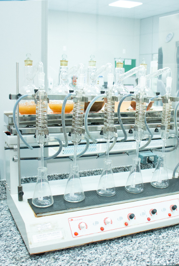
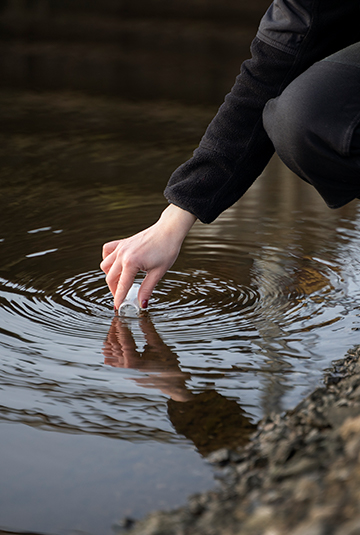

Análise de Efluentes Líquidos


A emissão de efluentes líquidos representa uma importante fonte de contaminação dos corpos aquáticos. Por essa razão o monitoramento tornou-se necessário e vem sendo cada vez mais controlado pelos órgãos ambientais


As análises incluem a caracterização de efluentes industriais e domésticos para o controle de qualidade e a conformidade com os padrões e diretrizes ambientais nacionais.